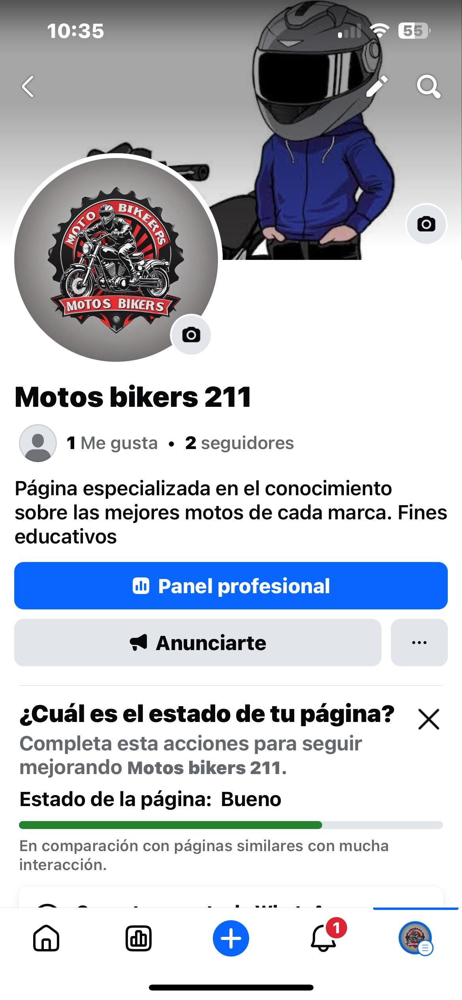
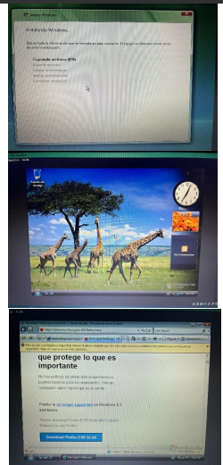
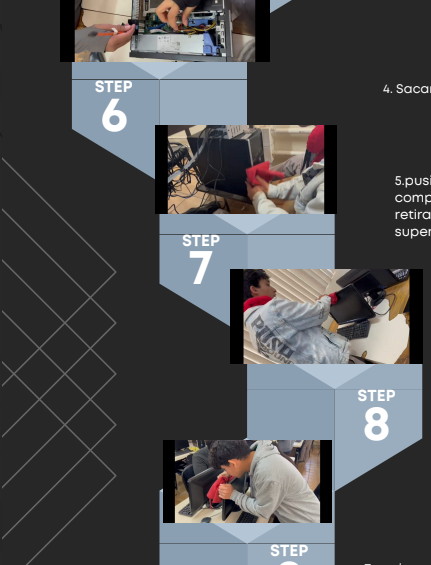

| Submódulo | Contenido |
|---|---|
| Submódulo 1: Comunidades Virtuales | Utiliza distintos tipos de redes y comunidades virtuales analizando sus características para intercambiar información y archivos multimedia de forma responsable en diversos ámbitos. Emplea plataformas con actividades educativas innovadoras reconociendo archivos multimedia y comunidades virtuales del entorno escolar o profesional para apoyar su formación continua. |
| Submódulo 2: Mantenimiento y Redes de Cómputo | Plantea el uso de diagramas de flujo y algoritmos analizando sus elementos para desarrollar soluciones creativas y lógicas en su contexto. Explica los lenguajes de programación identificando sus componentes y metodologías para facilitar el diseño de programas útiles. Propone la creación de códigos con instrucciones secuenciales condicionales y repetitivas comprendiendo los métodos de programación y asumiendo la frustración como parte del proceso de aprendizaje en la resolución de problemas. |
📘 Submódulo 1

📘 Submódulo 2

